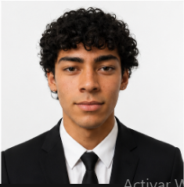

Timbre Automatizado
para Escuelas
Organizacion de la Empresa
Distribución estratégica de responsabilidades técnicas, operativas y de gestión de calidad.

Matías BalderramaEl Problema Real en las Instituciones
La dependencia del accionamiento manual del timbre genera pérdidas pedagógicas y fricciones institucionales.
Promedio de minutos desfasados por turno escolar por olvido o falta de personal.
El reloj mantiene la hora con una pila de respaldo y la memoria digital conserva los horarios programados.
Frente a programadores industriales complejos y con interfaces en inglés.
Lo Que Dice el Mercado
Encuesta realizada a directivos y referentes escolares de la zona sobre la percepción del timbre manual y el interés real en un sistema automatizado.
8% tal vez lo implementaría · 2% no.
8% lo considera útil · 2% poco útil.
6% lo ve nada eficiente · 4% neutral.
Fuente: encuesta interna a directivos y personal escolar — Felipe Aballay (Director Ejecutivo), N=100.
Propuesta de Valor para Colegios
No vendemos un reloj eléctrico: vendemos orden institucional, tranquilidad directiva y cumplimiento normativo.
Porque elegirnos?
| Característica | Tecno Electrónica (Nosotros) | Timer Riel DIN Digital | Campana Manual |
|---|---|---|---|
| Interfaz de Control | Web desde cualquier Celular / PC | Display diminuto y botones rígidos | Pulsador en preceptoría |
| Memoria de Horarios | Hasta 40 horarios independientes | 16 a 28 programas complejos | Depende de la memoria humana |
| Comportamiento ante corte | Conserva hora exacta y reanuda solo | Suele atrasarse o desconfigurar | No suena si no hay luz |
| Costo Total | Accesible y con soporte local en Tanti | Muy costoso + electricista calificado | Costo oculto en horas perdidas |
| Referencia Visual |
 Gabinete Tecno Electrónica
Gabinete Tecno Electrónica
|
 Tablero Riel DIN
Tablero Riel DIN
|
 Campana Manual
Campana Manual
|
Cómo viaja la energía y el control
Tocá cualquier bloque para explorar su función. Las flechas verdes muestran el recorrido de la energía; las celestes, el intercambio de datos.
Panel solar
Convierte la luz del sol en electricidad de corriente continua, que luego el regulador prepara para cargar la batería.
diseño de gabinete
Protección de la electrónica ante condiciones reales de uso institucional.
- ✓ Gabinete estanco: Tapa transparente de fácil inspección visual sin abrir el equipo.
- ✓ Montaje interno: Fijación para PCB, ESP32 todo dentro de un gabinete.
- ✓ Conexión segura: Bornera para dividir baja tension de la alta tension para una conexion segura de los cables de la campana.
- ✓ Indicador de conexión: boton digital testigo de alimentación activa y estado de enlace Wi-Fi.
Se monta junto al tablero general o campanario escolar existente sin romper paredes ni interrumpir la jornada pedagógica.
Estructura de Costos del Timbre
Cálculo riguroso de lista de materiales, mano de obra técnica y margen de utilidad del proyecto.
Costos directos de insumos para el módulo automatizador del timbre:
| Componente | Subtotal |
|---|---|
| Microcontrolador ESP32 (Wi-Fi integrado) | $ 11.159 |
| Módulo de reloj de precisión RTC DS3231 (c/ pila) | $ 8.851 |
| Placa base Pertinax y circuito de disparo | $ 6.146 |
| Relé de control 5V inversor y borneras | $ 1.480 |
| Cables y conexionado interno (Dupont) | $ 1.526 |
| TOTAL MATERIALES | $ 29.162 |
Cálculo integral considerando mano de obra calificada, herramientas y margen:
Relevamiento Técnico en el Colegio
Antes de instalar, visitamos la institución para confirmar qué se puede reutilizar de la instalación existente. Ese relevamiento es el que define el presupuesto definitivo.
- Confirmación de venta: se acuerda el presupuesto orientativo inicial y se agenda la visita al establecimiento.
- Inspección del tablero eléctrico: estado de llaves térmicas, disyuntor diferencial y capacidad disponible para la nueva carga.
- Relevamiento del campanario o timbre actual: tipo de campana, recorrido del cableado existente y distancia hasta el punto de instalación del gabinete.
- Evaluación de reutilización: se define qué cableado, campana o transformador se conserva y qué hay que reemplazar.
- Ajuste del presupuesto final: con los datos relevados se cierra el número definitivo, tal como se indica en la sección de costos.
- Firma y cronograma de instalación: se coordina con la institución la fecha de montaje.
- ✓ Estado del tablero eléctrico y de las protecciones existentes.
- ✓ Cableado actual entre preceptoría y campanario.
- ✓ Ubicación óptima para el gabinete del ESP32.
- ✓ Cantidad y estado de las campanas o parlantes a controlar.
Tiempo necesario para inspeccionar tablero, cableado y campanario, y dejar cerrado el presupuesto final junto al directivo.
Ensayos de Auditoría Técnica
Protocolo de validación de seguridad, resiliencia eléctrica y confiabilidad del software.
Puesta en Marcha en Tiempo Real
Prueba del sistema: Conexión Wi-Fi, ajuste horario, disparo manual y programación de timbre.
- Conexión al Wi-Fi:
Temporizador_ESP32 - Ingreso al panel en navegador:
192.168.4.1(puerta de enlace) - Sincronización instantánea con la hora del celular.
- Activación del Disparo de Prueba (enciende lámpara testigo y zumbador).
- Carga de horario y verificación de conmutación.
Equipo Tecno Electrónica — IPETyM Nº 84 (Tanti, Córdoba)
Abrimos el espacio para las preguntas del Honorable Tribunal.
Tecno Bot: Captación y Diagnóstico
Asistente conversacional interactivo embebido en la web oficial para cotizar y asesorar a directivos en tiempo real.
- ✓ Diagnóstico interactivo según necesidad escolar o comercial.
- ✓ Base de conocimiento completa sobre los 9 servicios de la empresa.
- ✓ Generación de resumen y pre-cotización antes del contacto humano.
- ✓ Conversación inteligente en tiempo real con historial persistente.
Incluye la API de Google AI Studio para hablar y dialogar con él en lenguaje natural, estando programado y diseñado 100% a medida para resolver al instante todas las consultas y dudas de los clientes.
Los 9 Servicios de Tecno Electrónica
Soluciones modulares para escuelas, comercios e industrias. Seleccioná un servicio para conocerlo en detalle.